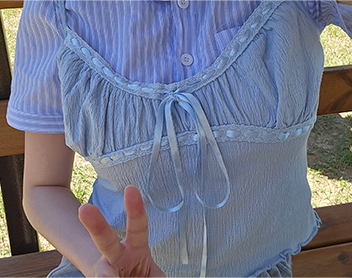
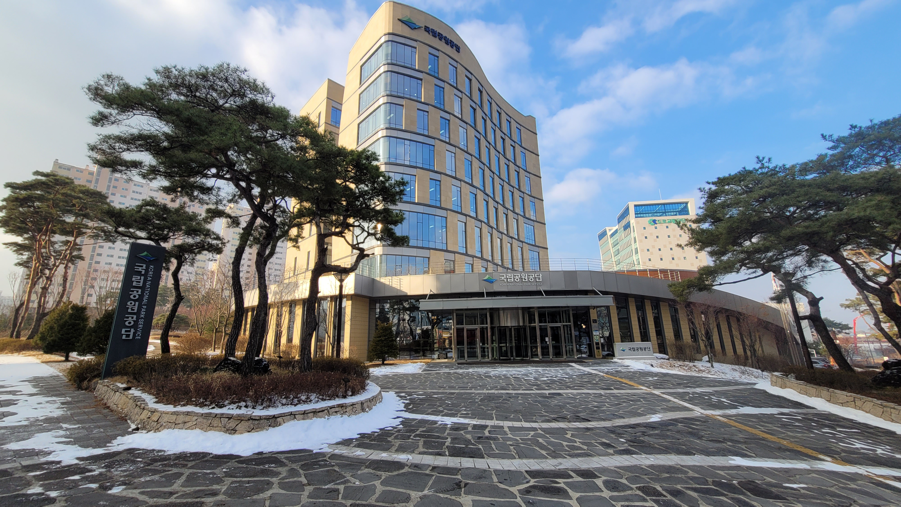

Portfolio · Vol. 01 · 2026
Kim
Kim
Taerima book of my work
UX Designer & Front-End Developer
화면 안의 세심한 디테일로 다정한 경험을 설계합니다. 웹 디자인부터 프론트엔드, 그래픽까지 일관된 시선과 하나의 목소리로 작업을 이어갑니다.

scroll to open
UX Designer & Front-End Developer
화면 안의 세심한 디테일로 다정한 경험을 설계합니다. 웹 디자인부터 프론트엔드, 그래픽까지 일관된 시선과 하나의 목소리로 작업을 이어갑니다.

Visual Designer, Busan"새로운 아이디어를 발견하고,
그것을 나만의 시각으로 표현하는 과정을 좋아합니다."
동의대학교 시각디자인학과에서 디자인을 공부하며 웹디자인, 브랜드 디자인, 그래픽 디자인 등 다양한 작업을 경험하고 있습니다. 단순히 보기 좋은 결과물을 만드는 것을 넘어, 하나의 콘셉트와 이야기가 자연스럽게 전달되는 디자인을 고민합니다.
새로운 것을 배우고 직접 구현해 보는 것을 좋아하며, HTML·CSS·JavaScript를 활용한 웹 작업에도 관심을 가지고 있습니다. 익숙한 방식에 머무르기보다 다양한 시도와 경험을 통해 저만의 디자인 언어를 만들어가는 디자이너가 되고 싶습니다.
기획과 UX 설계를 바탕으로 인터랙티브 구현까지, 프로젝트의 전 과정을 밀도 있게 완성합니다.
사용자 여정과 정보 구조(IA)를 유기적으로 설계하고, 브랜드 고유의 감성을 정교한 시각적 언어로 표현합니다.
HTML, CSS, JavaScript를 기반으로 기획된 디자인을 픽셀 단위로 구현하며, 사용자 친화적이고 감각적인 인터랙션을 완성합니다.
포스터, 굿즈, 캠페인 키비주얼 등 오프라인 영역까지 일관된 톤앤매너로 다듬어 브랜드 메시지의 깊이를 더합니다.
캐릭터 디자인과 무드보드를 직접 구축하며, 직관적이고 경쾌한 숏폼 모션을 결합해 화면 전체에 풍부한 생동감을 부여합니다.
시즌별 필터링 시스템, 에디토리얼 스타일의 갤러리, 감각적인 불규칙 패럴랙스 스크롤까지 웹 브랜딩 전반을 책임지고 구축했습니다.
팀 프로젝트로 진행된 리디자인 프로젝트입니다. 공원 상세 서브페이지 전체의 UX/UI 및 퍼블리싱을 전담 제작했습니다.
브랜드 시그니처 컬러를 중심으로 메인 프로모션 및 메뉴 상세 서브페이지의 레이아웃을 효율적으로 반응형 재구성했습니다.
뷰티 브랜드만의 독특한 무드를 살려 레이아웃부터 세밀한 화면 애니메이션 퍼블리싱까지 단독으로 마감했습니다.
기획과 UX/UI 설계, 프론트엔드 개발까지 깊이 있게 다룬 메인 웹 프로젝트입니다.

브랜드 특유의 몽환적인 무드를 극대화하는 비주얼 레이아웃을 설계하고, 섬세한 CSS 애니메이션을 이용해 와이어프레임 설계부터 프론트엔드 퍼블리싱까지 완결했습니다.

시그니처 컬러 체계를 체계화하고 Flexbox 기반의 가독성 높은 메뉴 가이드 및 브랜드 스토리 서브페이지들을 효율적으로 인터랙티브하게 재구축했습니다.

03 — Web Design팀 프로젝트로 기획된 리디자인 웹사이트입니다. 공원별 개별 정보 및 코스를 안내하는 서브페이지 전체의 UX/UI 및 구현을 전담하였습니다.

스트릿 패션 브랜드 고유의 아이덴티티를 살린 프로젝트로, 카테고리 필터링 UI, 에디토리얼 룩북 갤러리 및 모던한 스크롤 인터랙션을 직접 구현했습니다.
"좋은 화면은 억지로 시선